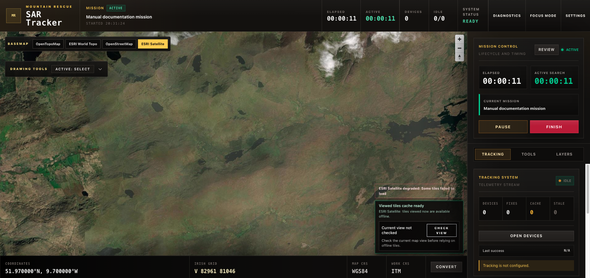
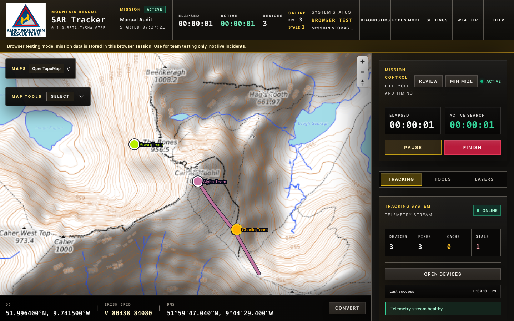
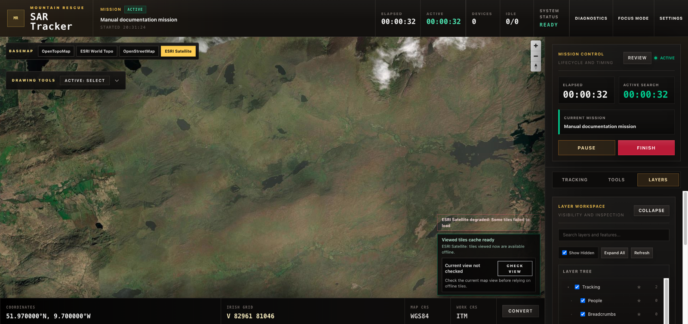
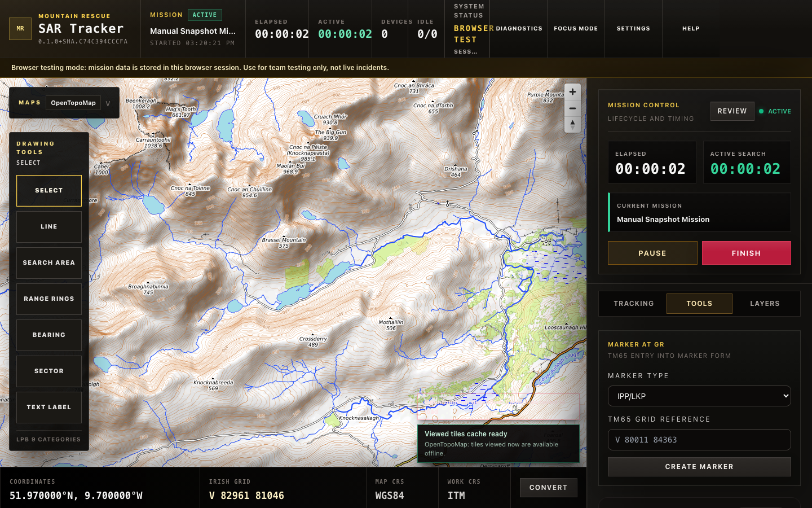
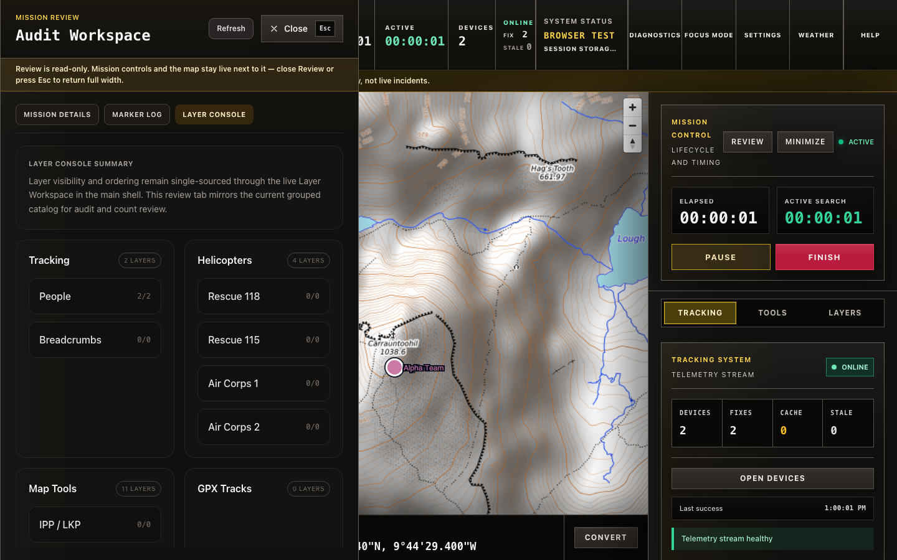
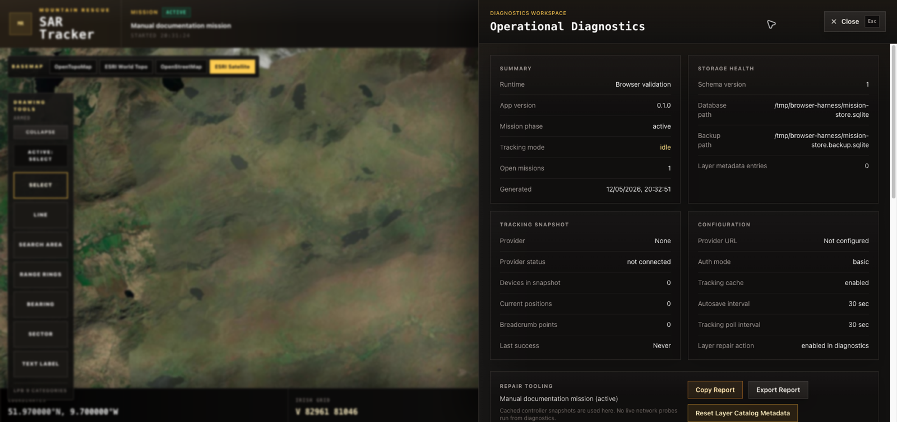
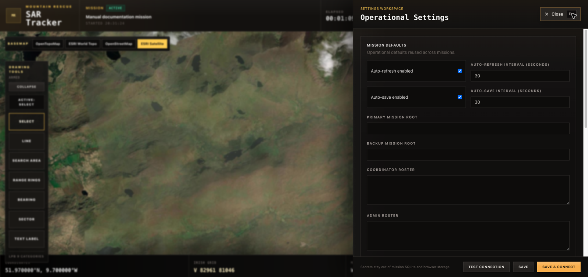

Mountain Rescue field operations
SAR Tracker Operator Manual
SAR Tracker is the standalone replacement for the older QGIS SAR workflow. It is built around a live map, mission lifecycle controls, Traccar tracking, operational layers, markers, drawings, measurements, GPX overlays, aviation slots, diagnostics, and mission review.
Start Here
For an operator
- Open the app and confirm the top mast says ready.
- Enter a clear mission name in Mission Control.
- Use Start Offset only when the real search began before the app was opened.
- Press Start, then confirm the mission phase changes to active.
- Check Tracking System, Layers, and Offline Map before field use.
Hosted browser testing
- Open https://sartracker-web.vercel.app/?missionHarness=1.
- Confirm the amber browser testing banner is visible.
- Confirm System Status says Browser test and Session storage only.
- Use Settings to configure Traccar before starting the mission.
- Use https://sartracker-web.vercel.app as the provider base URL.
- Start the mission from Mission Control after tracking connection succeeds.
For a maintainer
- Keep this manual factual and tied to app behavior.
- When a feature changes, update the matching section in this file.
- Replace screenshots when the UI changes materially.
- Do not document planned behavior as working behavior.
Hosted Testing And Feedback
Hosted test setup
- Open https://sartracker-web.vercel.app/?missionHarness=1.
- Confirm the amber browser testing banner is visible.
- Confirm the command mast reports Browser test and Session storage only, not desktop persistence.
- Open Settings, then Data Sources.
- Use https://sartracker-web.vercel.app as the Traccar provider base URL.
- Use Basic authentication with the team testing credentials.
- Run Test Connection, then Save, Connect & Close.
- Start a mission. Use a 24 or 48 hour Start Offset if breadcrumb history looks empty.
What to report
Report anything that blocks testing, makes the map or mission state ambiguous, hides useful tracker information, makes layers hard to trust, or feels awkward under pressure. Include the URL, mission name, mission start time or Start Offset, browser, machine, expected result, actual result, and a screenshot or video when possible.
Use docs/team-testing-feedback-loop.md as the shared testing checklist, bug
report template, and triage guide.
Desktop Beta Install Notes
handoff/HANDOFF.md.
Each desktop beta drop has a written release note under docs/releases/ in the
project repository. Do not run a beta that does not have a matching release note: the note
records the version, build tag, install steps, what changed, what to test, known limitations,
rollback guidance, and the CI run / verification report. If you are asked to test a beta and
the maintainer has not pointed you at a specific release note, stop and ask for one before
opening the app.
Electron betas are produced by the GitHub Actions release workflow. Every beta has a
SHA256SUMS file alongside the artifacts; verify your download against it before
running the binary. The current CI-produced beta is Linux x86_64; macOS builds remain local/manual
and Windows waits for the official-map smoke gate.
Linux (primary distribution target)
Two artifacts are published per CI Linux beta: a portable
.AppImage and a Debian .deb package, both x86_64. Current Electron beta
artifacts are named sartracker-electron-validation_<version>_linux_x86_64.AppImage and
sartracker-electron-validation_<version>_linux_amd64.deb.
AppImage: verify with
sha256sum -c SHA256SUMS --ignore-missing, then
chmod +x sartracker-electron-validation_<version>_linux_x86_64.AppImage and run it. If you see
dlopen(): error loading libfuse.so.2, install
libfuse2t64 on Ubuntu 24.04 / Debian 13 or libfuse2 on Ubuntu 22.04 /
Debian 12. AppImages do not auto-register a desktop menu entry. Use the
.deb if you want a permanent system install.
.deb: verify the checksum, then
sudo apt install ./sartracker-electron-validation_<version>_linux_amd64.deb. The package's
runtime dependencies are pulled in automatically.
Current Electron betas store Traccar passwords or tokens in SAR Tracker's app-owned local credential file, not the operating-system keyring. A locked or missing Linux login keyring should not block app startup or tracking configuration. If tracking reports that no credential is available, re-enter the password or token in Settings.
Windows (secondary distribution target)
Windows packaging is scaffolded as a single NSIS -setup.exe for Windows x86_64
(current-user install, no admin required), but the release workflow does not attach a Windows
installer to team betas until the Windows official-map smoke gate passes. Do not expect a
Windows artifact on the current Linux-only beta unless a maintainer explicitly says Windows
was enabled for that release. MSI is deferred until the version scheme supports it; see
sartracker-web-g1u.
The beta is unsigned, so Windows will show a SmartScreen warning that the publisher is unknown. This is expected. To install the NSIS package:
- Verify the checksum from PowerShell:
Get-FileHash sartracker-web_<version>_windows_amd64.exe -Algorithm SHA256and compare againstSHA256SUMS. - Right-click the
.exe→ Properties → tick Unblock → OK. - Double-click to run. SmartScreen will say "Windows protected your PC — Unknown publisher." Click More info, then Run anyway.
- The installer runs without prompting for admin. The app installs to
%LOCALAPPDATA%\Programs\sartracker-web. - On first launch, the app may briefly install Microsoft WebView2 if it is not already present. This step requires internet.
If your machine is managed by your team or workplace and Windows blocks the install entirely with no Run anyway option, you are on a locked-down policy (WDAC / AppLocker / SmartScreen for Business). There is no workaround for an unsigned binary; use a personal machine, or wait for the signed build.
macOS
macOS arm64 builds are not produced by the release CI pipeline. When a macOS artifact is needed it is built locally and uploaded separately to the GitHub release. Linux is the primary CI distribution target for the current beta lane; Windows is held until its smoke gate passes.
Because this internal beta is ad-hoc signed, macOS Gatekeeper may refuse to open it and may say Apple cannot verify the app, the developer cannot be verified, or the app is damaged or untrusted. Try Control-click / right-click → Open first. If the beta was supplied through the agreed internal channel and a maintainer asks you to remove quarantine, use:
xattr -dr com.apple.quarantine /Applications/sartracker-web.app
Do not run this command for app bundles from an untrusted source, and do not bypass managed Mac security policy; record that as a beta blocker.
Main Screen
The main screen is map-first. The top command mast gives mission, timing, tracking, system, diagnostics, focus mode, settings, and help. If mission backup autosave becomes stale or fails, the System Status area shows an amber autosave warning so the operator does not have to discover the problem in logs. If a mission lifecycle backup fails after start, pause, resume, finish, finalize, or unlock, the app also shows a persistent amber/rose alert below the mast. Keep the app open, capture diagnostics, and do not treat the backup copy as current until that alert clears after a matching successful lifecycle backup. In hosted browser testing mode, System Status shows Browser test and Session storage only so the testing lane is not confused with desktop operational persistence. The right side of the mast shows the current application version chip, which is stamped from the git commit at build time so teams can confirm they are running the same build. The mast also includes a compact Weather menu for configured external weather websites; it does not fetch, parse, or forecast weather inside SAR Tracker. The right rail is split into Tracking, Tools, and Layers. The map itself carries compact Maps and Map Tools controls, map health, offline tile status, and a grouped bottom-strip coordinate readout with DD, Irish Grid, and DMS values in one line plus the Convert control. In standard mode this is a bottom strip; in Focus Mode Plus, only the mirrored focus coordinate display is shown so awareness stays while the map surface stays less cluttered.

Mission name, phase, timers, device count, tracking cell (mode plus separate FIX and STALE counts), system state, autosave warning state, current app version, Diagnostics, Focus Mode, Settings, Weather, and Help.
Maps menu, Map Tools menu, live map canvas, health badge, offline-readiness badge, and coordinate readouts.
Pinned Mission Control plus tabs for tracking, tools, and layer inspection.
Mission Control
Mission Control owns the mission lifecycle. A mission starts in idle, moves
to active, can be paused and resumed, and can be
finished. Finished missions can be reviewed and, in the governance flow,
archived and locked. Finalizing a mission writes a standalone, immutable archive file
(a compressed snapshot of that mission's database, manifest, and any marker attachments)
into the app's archives folder; each mission keeps its own archive, and the
confirmation message reports the exact file path. Once finalized, a mission is locked: its
markers, drawings, helicopters, and GPX imports can no longer be edited or deleted until an
authorized admin unlocks it.
| Control | What It Does | Operator Check |
|---|---|---|
| Mission Name | Names the active incident record. | Use a name that field coordinators will recognize later. |
| Start Offset | Backdates the mission start by up to 48 hours. | Use only when the search already began before logging in the app, or when hosted testing needs older tracker history. |
| Pause / Resume | Stops or restarts active-search timing without ending the mission. | Elapsed time keeps running; active-search time pauses. |
| Finish | Opens a confirmation before ending the mission. | Confirm only when operations are genuinely complete. |
| Review | Opens mission details, marker log, layer console, and audit records. | Use after or during operations to inspect saved mission state. |
| Minimize / Expand | Collapses the active mission controls after setup to free right-rail space. | The control is not available while paused; expand before pausing, finishing, or changing lifecycle state. |
Map And Coordinates
The map renders in WGS84 for display, while ITM is the working coordinate reference system for operational records. TM65 Irish Grid is available for operator display and input. The coordinate readout updates as the cursor moves and shows the current point in DD, Irish Grid, and DMS. The Convert button sits beside those live values in standard mode. In Focus Mode Plus, the mirrored focus display remains with the same coordinate values so operators keep live location awareness while the bottom strip is intentionally reduced. Fixed CRS details are kept out of the live coordinate area so the operational surface stays focused on coordinates operators actively use.
Irish bounds safety. The Irish Grid is only meaningful inside Ireland, so when the cursor or a coordinate falls outside Ireland the readout shows Outside Ireland in place of the grid reference rather than inventing a plausible-looking grid value. For the same reason, creating a marker or converting a coordinate that lies grossly offshore is rejected with a clear error instead of being silently transformed — this protects against faults such as a GPS unit reporting a reset (0, 0) position. A coordinate a short distance off the coast can still resolve, because the check is a bounding box around Ireland and its islands; it is a guard against gross errors, not a land/sea test. The coordinate converter also refuses contradictory direction input, such as a negative value tagged E or N, rather than guessing the intended hemisphere.
Groups official maps and public fallback maps. Discovery Topo is the default official operational map once licensed maps are configured; hosted/browser testing keeps official maps marked not configured until a controlled private source is added.
Accepts IG, DD, and DMS, including pasted DD/DMS latitude-longitude pairs in the first field. W3W stays unavailable until integration decisions are settled. Results can be copied, used to jump the map, or used to open the normal marker form at that point.
Shows whether the active map is a public fallback, an online official source, or a ready/missing/unreadable official offline package. Warnings also appear on the map when the active map cannot be trusted offline.
Public fallback maps still use viewed tile caching. Official Discovery maps use local MBTiles packages in Electron builds when a package is registered. Open Maps and use Check View before relying on the current area: the app will report whether the view is inside the registered official offline area or outside it.
Official Maps: Field Readiness
Fresh Install To Offline Readiness
Follow these steps on a fresh Electron desktop install to reach field-ready official maps:
- Install the SAR Tracker Electron app from the release artifacts. Current CI betas publish Linux AppImage and
.debartifacts; use Windows or macOS artifacts only when a maintainer has explicitly supplied them for that beta. - Obtain the team USB drive or folder containing the MapGenie source details file and any prepared
.mbtilesDiscovery packages. - Open Settings → Official Maps.
- Click Choose MapGenie File and select the source details file from the USB. The app extracts safe metadata (username, available sources, service count) without storing credentials.
- Click Add Discovery Package and select a prepared
.mbtilespackage. The app copies the package into its own storage — you can remove the USB afterward. - Do not select raw Discovery source files such as
Discovery_National.zip,Discovery_RGB_95pct_C70_high30.1953.tif,relief_byte.tif, orSlope_30plus.tifwith Add Discovery Package. The beta expects an admin-prepared.mbtilespackage. - Click Save Settings. The app validates the copied package and reports its status as ready, missing, or unreadable.
- Switch to Discovery Topo in the Maps menu. The map renders from the local offline package.
- Open the Maps menu and check the Field Readiness panel. All items should show green ticks.
- Use Check View over your intended mission area to confirm it falls inside the offline package bounds.
Package Types
| Category | Size | Guidance |
|---|---|---|
| Standard | Under 2 GB | The Kerry/West operating-area package. Recommended for most operations. Import directly from USB. |
| Mission Area | 2–4 GB | Prepared for a specific search area. Verify coverage matches the intended deployment before relying on it. |
| National | Over 4 GB | Full national Discovery. Must be prepared by an admin in advance — not during a mission. Requires sufficient disk space and preparation time. |
App-Owned Package Storage
When you import a .mbtiles package, the app copies it into its own internal
storage directory. The original USB or source disk is no longer needed after import.
Packages can be removed from Settings → Official Maps by clicking the
remove button on each package card.
Field Readiness Checklist
The Maps menu shows a consolidated Field Readiness panel when an official map is selected. It checks four conditions before field deployment:
| Check | What It Means |
|---|---|
| Official package registered | A validated local offline package exists for the active map type. |
| Current view covered | The visible operational area is inside the offline package bounds. |
| Fallback source available | An online MapGenie source or a sufficient local package is available if the operator leaves the primary area. |
| Recently verified | The package has been validated (Save Settings re-validates packages automatically). |
When all items pass, the panel shows Field ready with a green indicator. When the package is missing or unregistered, it shows Not field ready in red. When coverage or fallback checks fail but the package itself is ready, it shows Partially ready in amber — pan to your mission area or import a broader package.
Readiness Certificate Export
In Settings → Official Maps, click Export Readiness Certificate to save a text file with sanitized package metadata: map type, status, zoom range, tile count, size, coverage bounds, and verification timestamps. This certificate is suitable for pre-mission audit without exposing private paths or credentials.
Troubleshooting
| Symptom | Action |
|---|---|
| Package shows missing | The registered package file is no longer accessible. Re-import from USB or check the source disk. |
| Package shows unreadable | The file exists but cannot be read as a valid MBTiles package. Re-download or re-prepare the package. |
| View outside package | The current map viewport extends beyond the offline package. Pan to your mission area or import a broader package. |
| Official maps show Not configured | No MapGenie source file has been selected. Use Choose MapGenie File in Settings. |
| Maps menu shows Not configured in hosted mode | Expected behavior. Hosted web is public-map-only. Official maps require the Electron desktop app. |
Tracking And Devices
The tracking runtime is designed around Traccar HTTP polling. It separates live positions from cached positions, keeps last-good data when the provider is unreachable, and marks stale devices rather than silently clearing them from the map.

Number of tracked devices known to the current snapshot.
Current position fixes rendered for devices.
Counts positions served from cache or considered stale.
Each tracked device renders as a colored current-location dot with a matching label. Breadcrumb trails use the same device color with a dark casing so previous movement remains visible across satellite, topo, and street basemaps. Hiding a device, the People layer, or Breadcrumbs from Layers removes the matching overlay from the map.
Devices Workspace
Press Open Devices from the Tracking tab to inspect the roster. The workspace shows Active Mission Devices above the full All Devices roster. Use Add to mark a device as taking part in the current mission, and Remove to take it out of the active list. Until at least one device is marked active, the map continues showing every tracked device so a new mission does not start with an empty tracking picture. Once active devices are selected, the map, labels, initial tracking frame, and breadcrumb trails focus on that active set while the full roster remains available for lookup. Each row still shows device health, last seen time, source, visibility, and a Zoom action for devices with a valid fix. Click the trail colour swatch on a device row to open a palette of high-contrast SAR colours for that device's breadcrumb and label. The list tabs and search field work together: choosing Active, Hidden, Online, Stale, or NoFix selects the first visible device in that list, and searching only looks inside the currently selected list. Breadcrumb Display is a global control: use Solid line for continuous trails or Breadcrumb dots for point-by-point history. The Breadcrumb Size control changes trail width in solid-line mode and dot diameter in breadcrumb-dot mode, so dense missions can be made calmer or more prominent without editing devices one by one. Reconnect reloads settings and forces the tracking provider to reconnect.
Adding Tracker Information
- Open Settings.
- In Data Sources, choose Traccar HTTP.
- Enter the provider base URL. On the hosted Vercel app, use https://sartracker-web.vercel.app; the app proxies securely to the team-managed HTTP Traccar server.
- Do not use the direct HTTP Traccar URL in hosted browser testing. Settings will warn and ask for the hosted HTTPS proxy instead.
- Choose Basic or Bearer authentication.
- Enter the email/password or bearer token.
- Use Test Connection before saving for live use; it authenticates against the configured Traccar server and checks device access.
- Use Save, Connect & Close to reload tracking immediately and return to the map.
Layers
The Layers tab is the operational visibility and inspection console. It controls map overlays for tracking, helicopters, map tools, markers, drawings, measurements, and GPX tracks. Changes are applied to the map filters, not just to the visible list.

| Layer Action | Meaning |
|---|---|
| Checkbox | Show or hide a group, layer, or feature on the map. |
| Expand / collapse row | Open or close a single grouped layer section using its ▸ / ▾ control. |
| Expand All / Collapse All | Open or close every group and layer in the tree at once. |
| Search | Filter the tree to matching layers and features. |
| Show Hidden | Include hidden nodes so they can be inspected or restored. |
| Alias | Rename a layer or feature without changing its underlying record. |
| Edit Drawing | For drawing feature rows, open the normal drawing form so misplaced drawings can be corrected or deleted with confirmation. |
| Move Up / Move Down | Select a layer or feature, then reorder it among its siblings in the tree. The new order is saved with the mission. |
Markers
Markers are map records for incident planning and field evidence. Click the map during an active mission to create a marker, then complete the marker form. Existing markers can be selected from the map or inspected through the mission review and layer surfaces. Dragging the map pans the view and does not create a marker.
Click priority: when a marker is stacked under or near a drawing (for example an LKP placed inside a search-area polygon), clicking the marker selects the marker rather than the enclosing drawing. The documented order is marker > drawing > empty terrain. To edit a drawing that has a marker on top of it, edit the drawing from the Layers panel instead.
Initial or last known position with subject category.
Clue type, confidence, found-by, and notes.
Hazard type and severity.
Condition, evacuation priority, found-by, and a timestamped treatment log.
Attach a photo or file that should travel with the marker in desktop mode.
Every marker shows WGS84, ITM, and TM65 readouts in the form.
To place a marker from a TM65 Irish Grid reference instead of a map click, open the Tools tab, use Marker At GR, choose the marker type, enter the grid reference, and create the marker. Valid references open the normal marker form with WGS84, ITM, and TM65 coordinates prefilled. The marker runtime refreshes to the active mission before opening the form so coordinate-created markers do not silently vanish. Invalid references fail visibly and do not create a marker.
The coordinate converter can also open the marker form after any successful IG, DD, or DMS conversion. Use Create Marker Here after conversion when the converted point should become an operational marker. Go To Location keeps the converted point available, so a marker can still be created after the map moves to that location.
Casualty required fields: casualty markers require Name, Condition, and Evacuation Priority before the marker can be saved. Missing fields are highlighted with a red border and “Required” label, and the Save button remains disabled until all three are filled. This prevents incomplete casualty records from being placed on the operational map.
Casualty markers keep treatment notes as a log. Enter each new treatment in New Treatment Update and choose Add Update; the app appends a timestamped entry to Existing Treatment Notes without overwriting earlier notes.
Deletion protection: deleting any marker requires two-stage confirmation. Clicking Delete shows a confirmation panel naming the marker type and the consequence; a second click on Delete Marker executes the deletion. Choosing Keep cancels the deletion and preserves the marker unchanged. The same two-stage pattern applies to measurements (Clear Measurements) and drawings.
Map Tools And Measurement
Map tools are armed from the map toolbar. They require an active mission and are disabled during recovery. Only one drawing or measurement mode should be active at a time; arming one cancels the other. Armed placement tools show a crosshair cursor; drag to pan without placing a drawing, then click intentionally to place. The placement crosshair and temporary go-to target are red with a white outline so they remain visible over bright raster tiles and dark terrain.
There is no separate Select button. When no tool is armed the map is in its normal select state: click a drawing to open its edit form, and click empty terrain to place a marker. After you save or cancel a tool the map returns to this select state automatically.

| Tool | Typical Use |
|---|---|
| Line | Draw route lines and see measured distance plus true/magnetic bearing to the endpoint. |
| Search Area | Draw polygons with team, status, POA, label size, fill colour (palette swatches or typed hex), terrain, and notes. |
| Range Rings | Create manual rings or LPB percentile rings from a point. |
| Bearing | Create a bearing line from an origin, distance, and true or magnetic bearing. |
| Sector | Create a search sector from center, start bearing, end bearing, and radius. |
| Text Label | Place map text with an anchor point, size, colour (palette swatches or typed hex), and rotation. Click and drag a placed label to move it; the new position is saved. |
| Measure | Temporary two-point distance and map-bearing measurement from Map Tools or the Tools tab. |
GPX And Helicopters
GPX Tracks
The GPX panel can import files, import a folder, watch a folder, rescan watched folders, and delete imported tracks. These file-system controls are available in the Electron desktop app and are disabled in browser-only validation mode.
Helicopters
The Helicopters panel reserves up to four aviation slots: Rescue 118, Rescue 115, Air Corps 1, and Air Corps 2. Each slot can hold call sign, HEX ID, latitude, longitude, altitude, speed, heading, and last update. A slot needs a call sign plus valid latitude and longitude before it can be saved.
Helicopters are opt-in to keep the Tracking panel uncluttered. By default the panel shows only slots that already hold a helicopter; empty reserve slots stay hidden behind an Add helicopter control. Use that control to reveal the free slots when you need to assign an aircraft, and Hide empty slots to collapse them again. Any slot that holds a helicopter always stays visible, so an in-use aircraft is never hidden. Map visibility for helicopters is unchanged and is still controlled from the Layers tab.
Review And Diagnostics
Mission Review
The Review button opens the Audit Workspace. It contains a mission selector, mission details, marker log, layer console, and event log. Use it to inspect saved mission state and to zoom back to markers when a marker has valid coordinates.
When a mission is active or paused, Review opens as a docked, read-only panel on the left of the map instead of a full-screen window. The mission-control rail (Pause, Finish) and the map stay live and usable next to it, so reviewing the audit history never blocks operating the incident. A note at the top of the panel confirms it is read-only. Close Review or press Esc to return the map to full width. When there is no active mission, Review opens full-screen with the mission selector for cross-mission audit.
The Audit Log shows operator-meaningful events by default — mission lifecycle changes, marker and drawing edits, GPX imports, and governance actions. High-volume tracking telemetry (device and position heartbeats, which can number in the tens of thousands on a multi-day mission) is hidden so the workspace opens quickly and stays responsive. The breadcrumb count for the mission is still shown in the summary cards. Tick Show tracking telemetry to include those events when needed. The log shows the most recent events; if older events exist beyond the display limit, a note indicates the list was trimmed.

Diagnostics
Diagnostics shows runtime mode, app version, mission phase, storage health, tracking snapshot, configuration, warnings, and a support report preview. It can copy or export the report and can reset layer catalog metadata for a selected mission. It can also export an incident-time bundle around a known problem time so recent crash summaries and runtime logs are focused on the evidence window instead of only the current app state. When very dense breadcrumb history is render-budgeted, the support report lists retained and observed breadcrumb counts per device and marks which device trails were simplified for display.
Crash Reporting & Support Bundle (desktop)
On the Electron desktop app, SAR Tracker keeps a small, bounded record of app-level events and any unexpected shutdowns so problems can be investigated without photographing error screens or running terminal commands. This data is stored locally only and is never sent anywhere automatically. It is sanitized: it contains no passwords, no tracking coordinates, and no user-account folder names.
- Export Support Bundle (Diagnostics workspace) saves a single text file containing the environment snapshot, the most recent crash summaries, and the recent runtime log. Use the file-save location it reports, then attach the file to email, a USB drive, or a chat message when reporting an issue.
- Export Incident Bundle (Diagnostics workspace) saves the same local bundle with a known incident time and a one-hour evidence window, 30 minutes before and 30 minutes after that time. Desktop bundles use the window to focus crash history and runtime logs.
- Unexpected-shutdown notice. If the app closed unexpectedly the previous time, a calm amber notice appears at the top of Diagnostics with a direct Export Support Bundle button. It never blocks an active mission.
Where the underlying files live on each platform (for advanced retrieval):
- Linux:
~/.config/sartracker-web/logs/and~/.config/sartracker-web/crashes/. Ubuntu may also keep a system crash file under/var/crash/. - macOS:
~/Library/Application Support/sartracker-web/logs/and.../crashes/. - Windows:
%APPDATA%\sartracker-web\logs\and%APPDATA%\sartracker-web\crashes\.
In the hosted browser app there is no persistent crash history; Export Support Bundle there produces the environment snapshot only.
Startup Faults
During startup, SAR Tracker shows a preparing screen until runtime services are ready. If the runtime cannot start, the app shows a startup fault panel instead of a partially disabled mission console. The panel can export a startup-fault support bundle before the normal Diagnostics workspace is available. Use Reload once after exporting or recording the fault. If the same fault returns, do not treat the app as ready for operational use.
SAR Tracker is a single-instance desktop app. If you click the launcher while it is already running, the existing window should come to the front instead of opening a second copy against the same mission data. If you ever see two SAR Tracker windows at the same time, close the extra window before operational use and export a support bundle after the app is stable.
SAR Tracker stores the Traccar password or token in an app-owned credential file in its own data folder, not in the operating-system keyring. This keeps tracking startup predictable on trusted team machines: the app does not depend on the Linux login keyring being unlocked to connect to devices. The credential value is never written to the settings file, diagnostics, or support bundles — diagnostics only report whether a secret is present and that credential storage is the local file.
On first launch after upgrading from an older beta, an existing keyring-encrypted credential is migrated automatically into the new local credential file when it can still be read. If an older stored credential cannot be read (for example a login keyring that was locked or changed on a previous version), SAR Tracker still opens normally with tracking disabled and a warning to re-enter the password or token in Settings. You can re-enter or clear the Traccar credential at any time from Settings without touching any files. This protects the mission record while avoiding a startup block caused only by the stored tracking secret.

Settings
Settings is where mission defaults, tracking provider configuration, official map source configuration, weather links, coordinate display mode, and advanced repair placeholders live.

| Section | What To Configure |
|---|---|
| Mission Defaults | Auto-refresh, auto-save, mission roots, coordinator roster, admin roster, and coordinate display preference. |
| Data Sources | Provider type, Traccar web/API URL, authentication mode, secret handling, auto-connect, tracking cache, replay defaults, and hosted-browser proxy guidance when the app is running from Vercel. For the team test server, desktop builds use the Traccar API port 8082; tracker listener ports such as 5055 are not valid provider base URLs. |
| Official Maps | Local/Electron configuration for the licensed MapGenie source file and registered official offline packages. In Electron builds, use Choose MapGenie File to select the source details file and Add Discovery Package to import an existing .mbtiles package from disk or USB into SAR Tracker storage. Raw Discovery .zip, .tif, and .tiff source files are not app-ready packages in the current beta; a map admin must prepare a .mbtiles package first. Save Settings to validate the copied package and refresh its ready, missing, or unreadable status. Each package is automatically classified as Standard (recommended, under 2 GB — the Kerry/West operating-area package), Mission Area (2–4 GB — prepared for a specific search area), or National (over 4 GB — large admin-prepared package with explicit warnings). The standard operating-area package is recommended for most operations. National packages should be prepared by an admin before a mission, not generated during one. Settings records only safe metadata such as source status, username, service count, package status, zoom range, tile count, safe file size, and verification time. It does not expose map package contents, passwords, or package paths in diagnostics, screenshots, or source control. Hosted browser testing keeps official maps unavailable unless a controlled private hosted source is added later. |
| Weather Links | A small named list of external weather URLs, such as Met Éireann. Bare domains like met.ie or www.yr.no are accepted and automatically normalized to https://. These links open in the system default browser; SAR Tracker does not import weather data. |
| Advanced Settings | Reserved repair/support actions. Some actions may remain disabled until the matching milestone is complete. |
Known Gaps And Limits
This section should stay honest. It is safer for an operator to know what is not complete than to infer reliability from a polished interface.
- Offline maps: public maps use viewed-tile caching. Electron can import, validate, remove, and serve local official MBTiles packages from app-owned storage, so the original USB or source disk can be unplugged after import. The map reports ready, outside-area, missing, unreadable, online-source, unavailable, and public-fallback states. The Maps menu includes a field-readiness checklist and Settings can export a readiness certificate.
- Replay mode: settings expose replay defaults, but full replay/training workflow parity is still active work.
- Mission metadata: richer coordinator/metadata capture at mission start remains a parity gap.
- Layer parity: the app has a grouped layer tree with visibility, aliases, expand/collapse all, and reorder controls, but final parity acceptance is still pending.
- Desktop beta distribution: current CI beta artifacts are Linux x86_64 AppImage and
.debpackages. macOS artifacts are local/manual when needed, and Windows NSIS artifacts remain gated until the Windows official-map smoke passes. Developer ID signing, notarization, DMG packaging, and signed Windows installer behavior remain open release work. - Hosted browser testing: Vercel browser mode currently uses session storage for mission data and caps very large persisted tracker histories. It is intended to unblock team testing, not replace the installed app for live incidents yet.
- Browser harness differences: desktop-only actions such as GPX file picking and marker file attachments are limited or unavailable in browser validation mode.
Maintaining This Manual
Treat this as living documentation. When a feature is added, changed, or found to behave
differently from this guide, update the manual in the same work batch. Screenshots live under
public/manual/assets/, and the manual itself is public/manual/index.html.